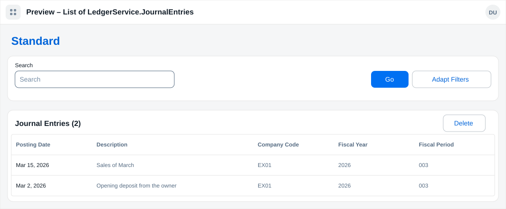
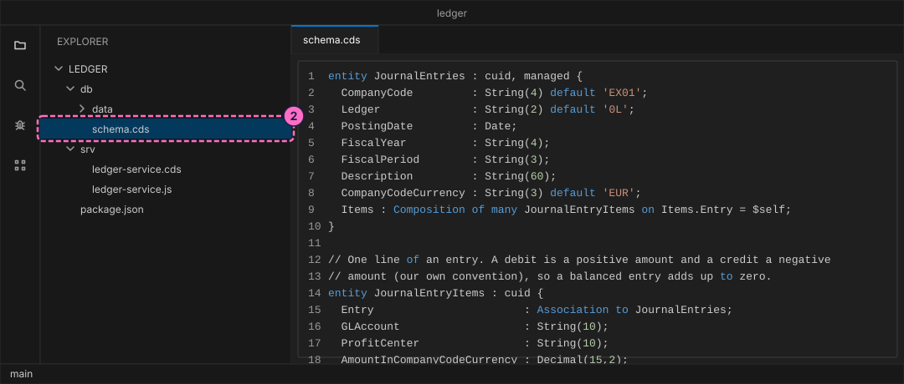
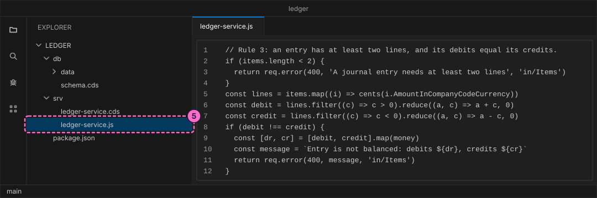
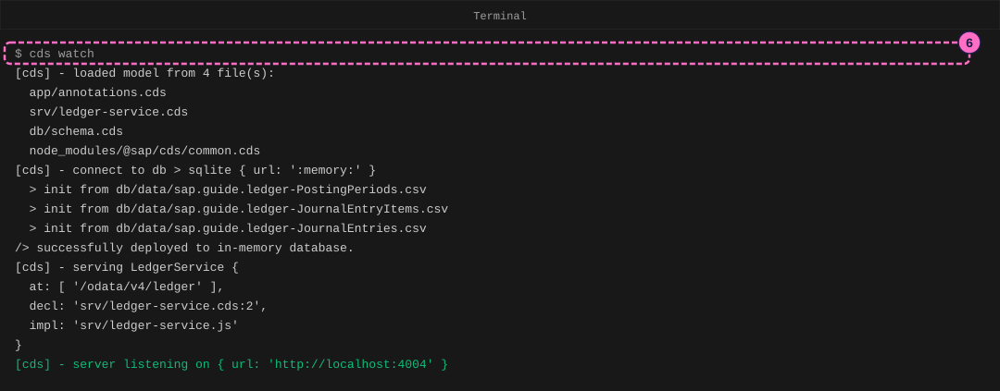
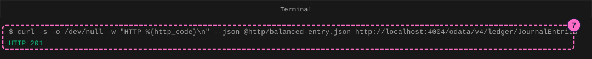
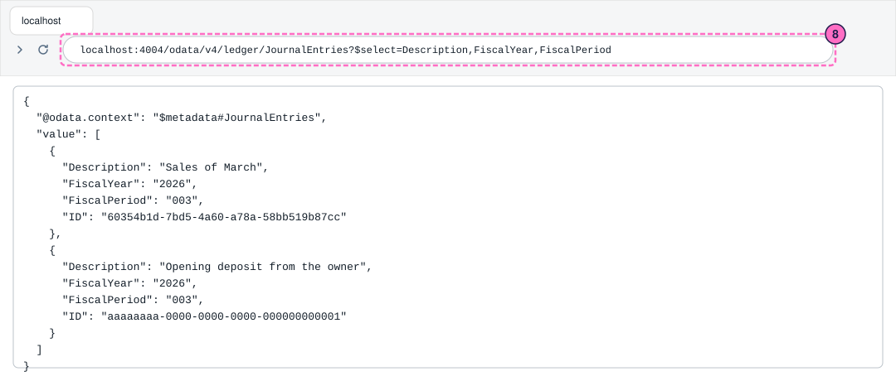
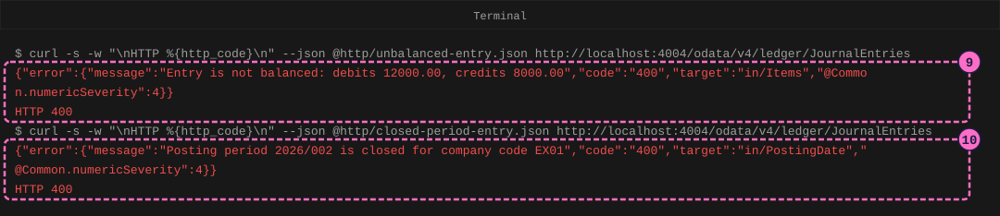
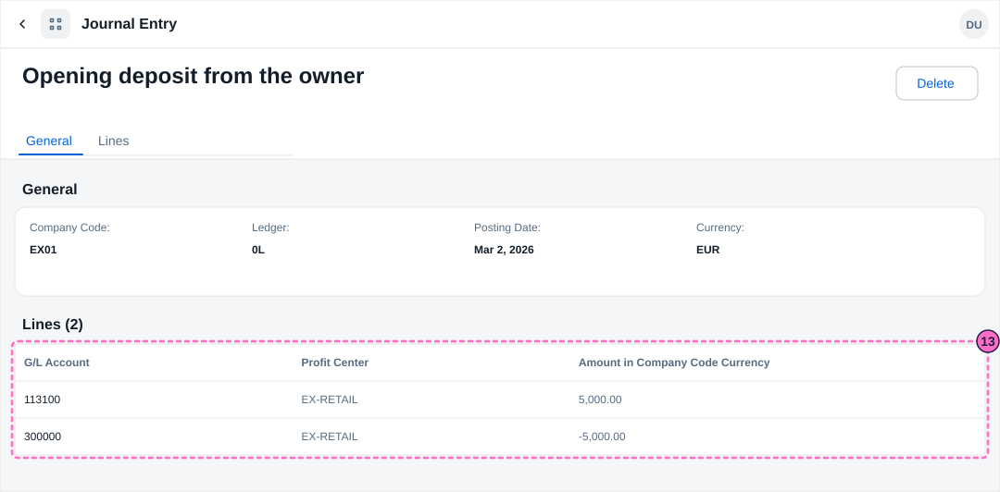

SAP Finance Guide: Post Balanced Journal Entries in a Teaching Ledger
|
This content was generated with the assistance of AI and should be verified against the official documentation before being relied on in production. |
Checked on 2026-11-13 against CAP Node.js 10.2 (@sap/cds 10.2.2, @sap/cds-dk 10.2.1), the Fiori elements preview of cds watch (SAPUI5 1.145.0), curl 8.7 and Node.js 24.21.
What you build
This is a teaching model built with CAP. It is not SAP S/4HANA or SAP SuccessFactors and does not reproduce their screens.
You build a small ledger for the company code EX01 of Example Trading Co. A journal entry has a header (posting date, description, company code, ledger 0L) and two or more lines, each with a G/L account, a profit center and an amount. Following the rule of double-entry bookkeeping, the debits of an entry must equal its credits. Your service enforces this rule, and a second rule: an entry may only be posted into a posting period that is open. You post a balanced entry, see two entries rejected with a clear message, and read the result in a Fiori elements list report.

Before you start
-
No account is needed: the CAP tools and curl install without signing in. Installing
@sap/cds-dkmeans accepting the SAP Developer License Agreement, version 3.2, which the lab README names. -
Do the guide Your First CAP Service first (it explains
cds init, CDS files, CSV data andcds watch) and, for the list report, the guide Add a Fiori Elements App to a CAP Service. -
Read Accounting Basics for debit and credit, The Universal Journal (ACDOCA) for the one table of journal entry lines in SAP S/4HANA, Journal Entries, Document Types and Posting Keys and Fiscal Year and Posting Periods for the ideas that the model copies.
-
You need curl 7.82 or newer, which has the option
--json.curl --versionprints the version. -
The names.
CompanyCode,Ledger,GLAccount,CompanyCodeCurrencyandAmountInCompanyCodeCurrencyare element names that the page of the SAP viewI_JournalEntryItemBasicprints; the fiscal year of that view is calledLedgerFiscalYear. The other names (PostingDate,FiscalYear,FiscalPeriod,ProfitCenter,Description,Open) and the sign convention (a debit is a positive amount, a credit a negative one) are this model’s own, and the codes and amounts are made up. The account numbers113100(bank),300000and800000are invented example numbers, not delivered by SAP. -
The figures are drawings of the editor, the terminal, the browser and the Fiori pages, not screenshots. A highlighted box with a number marks the file, the line or the page part of the step with the same number.
Steps
Create the project and the model
-
Create a CAP project named
ledgerand install it, as in the first guide:cds init ledger --nodejs cd ledger npm install -
Create
db/schema.cds. The entityJournalEntriesis the header.Itemsis a composition: the lines of an entry belong to it and are created together with it.JournalEntryItemsholds one line each.PostingPeriodssays which periods are open for a company code. The comments in the file say which names come from SAP.using { cuid, managed } from '@sap/cds/common'; namespace sap.guide.ledger; // A teaching model of a journal entry, not SAP S/4HANA. CompanyCode, Ledger, // GLAccount, CompanyCodeCurrency and AmountInCompanyCodeCurrency are element // names of the SAP view I_JournalEntryItemBasic; the other names are our own. entity JournalEntries : cuid, managed { CompanyCode : String(4) default 'EX01'; Ledger : String(2) default '0L'; PostingDate : Date; FiscalYear : String(4); FiscalPeriod : String(3); Description : String(60); CompanyCodeCurrency : String(3) default 'EUR'; Items : Composition of many JournalEntryItems on Items.Entry = $self; } // One line of an entry. A debit is a positive amount and a credit a negative // amount (our own convention), so a balanced entry adds up to zero. entity JournalEntryItems : cuid { Entry : Association to JournalEntries; GLAccount : String(10); ProfitCenter : String(10); AmountInCompanyCodeCurrency : Decimal(15,2); } // Which posting periods are open for a company code. The model uses the // calendar year as the fiscal year, with 12 monthly periods. entity PostingPeriods { key CompanyCode : String(4); key FiscalYear : String(4); key FiscalPeriod : String(3); Open : Boolean; } -
Create the three CSV files in
db/data. The file names are the namespace, a dash and the entity name. The first file opens the periods of 2026 from March on and keeps January and February closed. The second and the third hold one balanced entry that is there from the start: the owner pays in 5,000.00 EUR, a debit on the bank account and a credit on account300000.CompanyCode,FiscalYear,FiscalPeriod,Open EX01,2026,001,false EX01,2026,002,false EX01,2026,003,true EX01,2026,004,true EX01,2026,005,true EX01,2026,006,true EX01,2026,007,true EX01,2026,008,true EX01,2026,009,true EX01,2026,010,true EX01,2026,011,true EX01,2026,012,trueID,CompanyCode,Ledger,PostingDate,FiscalYear,FiscalPeriod,Description,CompanyCodeCurrency aaaaaaaa-0000-0000-0000-000000000001,EX01,0L,2026-03-02,2026,003,Opening deposit from the owner,EURID,Entry_ID,GLAccount,ProfitCenter,AmountInCompanyCodeCurrency bbbbbbbb-0000-0000-0000-000000000001,aaaaaaaa-0000-0000-0000-000000000001,113100,EX-RETAIL,5000.00 bbbbbbbb-0000-0000-0000-000000000002,aaaaaaaa-0000-0000-0000-000000000001,300000,EX-RETAIL,-5000.00
Write the posting rules
-
Create
srv/ledger-service.cds. It exposes the three entities as an OData service.@readonlykeeps users from changing the periods:using { sap.guide.ledger as db } from '../db/schema'; service LedgerService { entity JournalEntries as projection on db.JournalEntries; entity JournalEntryItems as projection on db.JournalEntryItems; @readonly entity PostingPeriods as projection on db.PostingPeriods; } -
Create
srv/ledger-service.js. CAP loads it next to the service of the same name. The functionbefore('CREATE', 'JournalEntries', ...)runs before a new entry is stored. Rule 1 takes the fiscal year and the posting period from the posting date (this model uses the calendar year and 12 monthly periods, so March is period003). Rule 2 looks up the period and rejects the entry when it is not open or not known. Rule 3 needs at least two lines and compares debits and credits. Amounts are turned into whole cents first, so that sums like 0.1 + 0.2 are exact.req.errorstops the request with HTTP 400 and the message.import cds from '@sap/cds' // The posting rules of the teaching ledger. cents() turns an amount into whole // cents so that the sums are exact. const cents = (amount) => Math.round(Number(amount) * 100) const money = (c) => (c / 100).toFixed(2) export default class LedgerService extends cds.ApplicationService { init() { const { PostingPeriods } = this.entities this.before('CREATE', 'JournalEntries', async (req) => { const entry = req.data const items = entry.Items ?? [] // Rule 1: the posting date decides the fiscal year and the posting period // (this model: calendar year, 12 monthly periods). const [year, month] = (entry.PostingDate ?? '').split('-').map(Number) if (!year || !month) { return req.error(400, 'A posting date such as 2026-03-15 is required', 'in/PostingDate') } entry.FiscalYear = String(year) entry.FiscalPeriod = String(month).padStart(3, '0') // Rule 2: the posting period must be open for the company code. const key = { CompanyCode: entry.CompanyCode ?? 'EX01', FiscalYear: entry.FiscalYear, FiscalPeriod: entry.FiscalPeriod, } const period = await SELECT.one.from(PostingPeriods).where(key) if (!period?.Open) { const message = `Posting period ${key.FiscalYear}/${key.FiscalPeriod} is closed for company code ${key.CompanyCode}` return req.error(400, message, 'in/PostingDate') } // Rule 3: an entry has at least two lines, and its debits equal its credits. if (items.length < 2) { return req.error(400, 'A journal entry needs at least two lines', 'in/Items') } const lines = items.map((i) => cents(i.AmountInCompanyCodeCurrency)) const debit = lines.filter((c) => c > 0).reduce((a, c) => a + c, 0) const credit = lines.filter((c) => c < 0).reduce((a, c) => a - c, 0) if (debit !== credit) { const [dr, cr] = [debit, credit].map(money) const message = `Entry is not balanced: debits ${dr}, credits ${cr}` return req.error(400, message, 'in/Items') } }) return super.init() } }
Start the service and post entries
-
In the terminal, in the project folder, start the server. The log shows the three CSV files loaded and
LedgerServiceserved at/odata/v4/ledger; the lineimpl: 'srv/ledger-service.js'shows that CAP found your rules.cds watch
-
Create the folder
httpand in it the filebalanced-entry.json. It is a sales entry of 12,000.00 EUR: a debit on the bank account against two credits of 8,000.00 for the profit centerEX-RETAILand 4,000.00 forEX-WHOLE. 12,000.00 - 8,000.00 - 4,000.00 = 0.{ "PostingDate": "2026-03-15", "Description": "Sales of March", "Items": [ { "GLAccount": "113100", "ProfitCenter": "EX-RETAIL", "AmountInCompanyCodeCurrency": 12000.00 }, { "GLAccount": "800000", "ProfitCenter": "EX-RETAIL", "AmountInCompanyCodeCurrency": -8000.00 }, { "GLAccount": "800000", "ProfitCenter": "EX-WHOLE", "AmountInCompanyCodeCurrency": -4000.00 } ] }Open a second terminal in the project folder and post it. The option
--jsonsets the content type, and-o /dev/null -wprints only the status:curl -s -o /dev/null -w "HTTP %{http_code}\n" --json @http/balanced-entry.json http://localhost:4004/odata/v4/ledger/JournalEntriesThe answer is
HTTP 201, created. The server stored the header and its three lines in one step.
-
Read the entries back. Open http://localhost:4004/odata/v4/ledger/JournalEntries?$select=Description,FiscalYear,FiscalPeriod in the browser. Both entries are there, and your new one has
FiscalYear2026andFiscalPeriod003, although you never sent them: rule 1 derived them from the posting date2026-03-15. TheIDof your entry differs from the one in the figure.
-
Create
http/unbalanced-entry.json: a debit of 12,000.00 against a credit of only 8,000.00. Post it with the same command as in step 7, but without-o /dev/null, so that you see the answer. The answer is HTTP 400 with the messageEntry is not balanced: debits 12000.00, credits 8000.00, and nothing is stored.{ "PostingDate": "2026-03-15", "Description": "Unbalanced", "Items": [ { "GLAccount": "113100", "AmountInCompanyCodeCurrency": 12000.00 }, { "GLAccount": "800000", "AmountInCompanyCodeCurrency": -8000.00 } ] }curl -s -w "\nHTTP %{http_code}\n" --json @http/unbalanced-entry.json http://localhost:4004/odata/v4/ledger/JournalEntries -
Create
http/closed-period-entry.json: a balanced entry dated 2026-02-10, in the closed February. Post it the same way. The answer is HTTP 400 withPosting period 2026/002 is closed for company code EX01. The service checked the period before it looked at the amounts.{ "PostingDate": "2026-02-10", "Description": "Too late", "Items": [ { "GLAccount": "113100", "AmountInCompanyCodeCurrency": 100.00 }, { "GLAccount": "800000", "AmountInCompanyCodeCurrency": -100.00 } ] }curl -s -w "\nHTTP %{http_code}\n" --json @http/closed-period-entry.json http://localhost:4004/odata/v4/ledger/JournalEntries
See the entries in a list report
-
Create
app/annotations.cds. The first part gives the fields their labels, the second builds the list report (the columns), the header of the object page, and its two sections: a field group and the table of lines.using LedgerService as service from '../srv/ledger-service'; annotate service.JournalEntries with { PostingDate @title : 'Posting Date'; Description @title : 'Description'; CompanyCode @title : 'Company Code'; Ledger @title : 'Ledger'; FiscalYear @title : 'Fiscal Year'; FiscalPeriod @title : 'Fiscal Period'; CompanyCodeCurrency @title : 'Currency'; }; annotate service.JournalEntryItems with { GLAccount @title : 'G/L Account'; ProfitCenter @title : 'Profit Center'; AmountInCompanyCodeCurrency @title : 'Amount in Company Code Currency'; }; annotate service.JournalEntries with @( UI.LineItem : [ { Value : PostingDate }, { Value : Description }, { Value : CompanyCode }, { Value : FiscalYear }, { Value : FiscalPeriod } ], UI.HeaderInfo : { TypeName : 'Journal Entry', TypeNamePlural : 'Journal Entries', Title : { Value : Description } }, UI.Facets : [ { $Type : 'UI.ReferenceFacet', Label : 'General', Target : '@UI.FieldGroup#General' }, { $Type : 'UI.ReferenceFacet', Label : 'Lines', Target : 'Items/@UI.LineItem' } ], UI.FieldGroup #General : { Data : [{ Value : CompanyCode }, { Value : Ledger }, { Value : PostingDate }, { Value : CompanyCodeCurrency }] } ); annotate service.JournalEntryItems with @( UI.LineItem : [{ Value : GLAccount }, { Value : ProfitCenter }, { Value : AmountInCompanyCodeCurrency }] ); -
Open http://localhost:4004/$fiori-preview/LedgerService/JournalEntries?sap-language=EN#preview-app. The list report Journal Entries (2) shows your entry and the opening entry with their posting date, description, company code, fiscal year and fiscal period. The model has no drafts, so the page has no Create button; entries come in through the service.
-
Click the entry Opening deposit from the owner. The object page shows the header fields and the table Lines (2): the debit
5,000.00on113100and the credit-5,000.00on300000. They add up to zero.
Check the result
-
The post of step 7 answers
HTTP 201, and the list report shows Journal Entries (2). -
The two rejected entries answer HTTP 400 with the messages of step 10, and the list still shows two entries.
-
For every entry in the list, the amounts of its lines add up to zero.
Variations
-
Post an entry dated 2027-01-10. The answer is
Posting period 2027/001 is closed for company code EX01, because the model has no row for 2027 and treats an unknown period as closed. -
Post an entry with a single line, or without a posting date. The service answers
A journal entry needs at least two linesandA posting date such as 2026-03-15 is required. -
Open January: in
db/data/sap.guide.ledger-PostingPeriods.csvchange theOpenvalue of period001totrue, save, and post an entry dated 2026-01-10.
What can go wrong
| Symptom | Cause | Fix |
|---|---|---|
|
The debits and credits of the lines differ. |
Correct the amounts so that they add up to zero. Debits are positive and credits negative. |
|
The posting date falls in a closed or unknown period. |
Use a date in an open period, or open the period in the CSV file as in the variations. |
|
The body has fewer than two lines, or no |
Complete the JSON file. |
Clean up
Press Ctrl+C in the terminal that runs cds watch. The database lives only in memory, so the entry you posted is gone at the next start; the CSV files bring back the opening entry.
Where to go next
-
Previous guides: Your First CAP Service and Add a Fiori Elements App to a CAP Service.
-
Reference: The Universal Journal (ACDOCA).
-
Reference: Journal Entries, Document Types and Posting Keys.
-
Reference: Fiscal Year and Posting Periods.